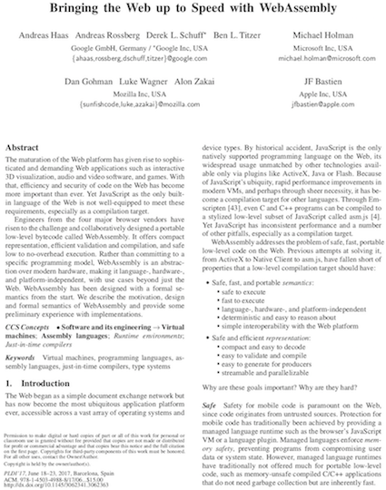

Wasm and You
A Brief Tour of WebAssembly
https://ddoherty.github.io/presentations/WasmAndYou
Dave Doherty
Bitwixt Software Systems LLC
ddoherty@bitwixt.com
The Buzz
June 2015: Brendan Eich, Creator of the JavaScript programming language
Today’s Big News:
It’s by now a cliché that JS has become the assembly language of the Web. Rather, JS is one syntax for a portable and safe machine language, let’s say.Today I’m pleased to announce that cross-browser work has begun on WebAssembly, a new intermediate representation for safe code on the Web.
[…]
I usually finish with a joke: “Always bet on JS”.
I look forward to working “and wasm” into that line — no joke.
June 2017: Bringing the Web up to Speed with WebAssembly

What is WebAssembly?
WebAssembly (abbreviated Wasm) is a binary instruction format for a stack-based virtual machine. Wasm is designed as a portable target for compilation of high-level languages like C/C++/Rust, enabling deployment on the web for client and server applications.
At its core, WebAssembly is a virtual instruction set architecture (virtual ISA).
https://webassembly.github.io/threads/intro/introduction.html
Shorthand:
Efficient*, Low-Level Bytecode for the Web
(and Elsewhere)
*Fast to Load
Fast to Execute
"Bytecode for the Web"
We've tried this before:


- Proprietary
- Plugins
- Platform-Specific
- Security Nightmares
Wasm Won.
- Followed the Web Standards Process
- Built-in to Browsers (and Node) – No Plugins
- Actively Supported by all Major Vendors
- Safety: Runs in a sandboxed execution environment
Wasm Goals
-
Safe, fast, and portable semantics:
- safe to execute
- fast to execute
- language-, hardware-, and platform-independent
- deterministic and easy to reason about
- simple interoperability with the Web platform
-
Safe and efficient representation:
- compact and easy to decode
- easy to validate and compile
- easy to generate for producers
- streamable and parallelizable
From: Bringing the Web up to Speed with WebAssembly
See also:
https://webassembly.org/docs/high-level-goals/
Why is Wasm faster than JavaScript?
Let's compare execution pipelines…
JS:
- Synchronous, lots of phases
- Performance is Slow(er) and Unpredictable
Wasm:
- Smaller (Binary)
- Optimized Ahead of Time
- Async Compiles: Usually Compiles Faster than it arrives!
- Performance is Fast(er) and Predictable
But Is It Really Smaller and Faster? (Benchmarks)
"If you torture the data long enough, it will confess."
Ronald Harry Coase, British Economist and Nobel Laureate
Speed
Overall, the results show that WebAssembly is very competitive with native code, with 7 benchmarks within 10% of native and nearly all of them within 2× of native.
On average, WebAssembly is 33.7% faster than asm.js
Size
On average, WebAssembly code is 62.5% the size of asm.js (median 68.6%),and 85.3% of native x86-64 code size (median 78%).
Performance comparison of WebAssembly, C++ Addon, and native implementations of various algorithms in Node.js:
> node benchmark.js Levenstein Distance: Native x 209,706 ops/sec ±0.50% (92 runs sampled) N-API Addon x 468,656 ops/sec ±2.64% (93 runs sampled) Web Assembly x 216,820 ops/sec ±8.49% (95 runs sampled) Fastest is N-API Addon Fibonacci: Native x 5,531,150 ops/sec ±9.09% (76 runs sampled) N-API Addon x 6,263,628 ops/sec ±9.31% (73 runs sampled) Web Assembly x 14,391,462 ops/sec ±9.46% (73 runs sampled) Fastest is Web Assembly Fermat Primality Test: Native x 2,513,841 ops/sec ±0.09% (97 runs sampled) N-API Addon x 2,913,153 ops/sec ±5.23% (89 runs sampled) Web Assembly x 3,123,655 ops/sec ±9.51% (86 runs sampled) Fastest is Web Assembly Simple Linear Regression: Native x 255,253 ops/sec ±9.81% (72 runs sampled) N-API Addon x 4,179 ops/sec ±8.81% (74 runs sampled) N-API Addon using TypedArrays x 118,997 ops/sec ±2.63% (95 runs sampled) Web Assembly x 39,266 ops/sec ±9.45% (73 runs sampled) Web Assembly using TypedArrays x 49,503 ops/sec ±9.17% (76 runs sampled) Fastest is Native SHA256: Native x 12,009 ops/sec ±9.20% (73 runs sampled) N-API Addon x 77,340 ops/sec ±9.09% (77 runs sampled) Web Assembly x 30,375 ops/sec ±8.55% (73 runs sampled) Fastest is N-API Addon
Wasm powers Atomsmith's
numerical simulation
and 3D visualization engines.
(some stuff I built)
What does wasm look like?
(Not that you'll ever need to look at it.)
One-byte Instructions (Bytecode):
- binary
- text
https://webassembly.github.io/spec/core/binary/instructions.html
Wasm in Node (≥ v8.0.0)
int adder(int num1, int num2) {
return num1 + num2;
}
adder.c
Using:
WebAssembly Explorer
https://mbebenita.github.io/WasmExplorer/
C99 -Os
Save to adder.wasm
JS code to compile, instantiate, and run Wasm module in Node:
const WA = WebAssembly,
env = {__memory_base: 0,
__table_base: 0,
memory: new WA.Memory({initial: 256}),
table: new WA.Table({initial: 0, element: 'anyfunc'})},
code = new Uint8Array(require('fs').readFileSync('adder.wasm'))
WA.compile(code).then(m => {
return new WA.Instance(m, {env: env})
}).then(instance => {
console.log(instance.exports.adder(20, 22))
})
adder.js
Run (Node v ≥ 8.0.0 !):
node adder.js
Note: in the Browser
WebAssembly.instantiateStreaming()
replaces
WebAssembly.compile()
Hot Now: Non-Web Embeddings
- WASI: A system interface to run WebAssembly outside the web
- Wasmer: Standalone WebAssembly Runtime. Can be used as a library embedded in different languages. Supports WASI.
The Future
- multithreading
- access to the DOM
- SIMD
- garbage collection
- more languages target to Wasm (many need GC)
Watch this:
The Birth & Death of JavaScript by Gary Bernhardt
Brendan Eich: "I live to troll Gary"
Standardizing WASI: A system interface to run WebAssembly outside the web
(from the creator of Docker:)

Questions?
Dave Doherty
ddoherty@bitwixt.com